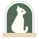

Бастет — знак и фирменный блок
Prata 400 · Inter 400–700 · сетка 64 × 64Построение на сетке 64 × 64
Сидящая Бастет в профиль, как египетская статуэтка. Бедро — окружность R 11, спина — касательная к ней; выемка затылка и второе ухо отделяют голову от спины. Хвост 5/64 и прорезь 4/64 — концентрические дуги, поэтому изгиб мягкий, а толщина постоянна. Глаз — песочная инкрустация, ниже 24 px скрыт.
24 и 16 px — малая версия: крупнее, без глаза
Один цвет, глаз вырезан и показывает фон

тёмный вариантПастельная арка-портал с тонким контуром и песочным порогом — как арка на первом экране сайта. У фавикона собственный фон, поэтому он читается на любой вкладке. Тёмный вариант — шалфей #556B57, не серый и не чёрный.
#3F5142знак, название · 7,63 : 1 к ivory#556B57дескриптор · 5,19 : 1 к ivory#C8D5C1арка бейджа · кошка на ней 5,57 : 1#E8D7BFглаз, порог · 6,04 : 1 к силуэту#F7F2E8основной фон#FFFCF5негатив · 8,31 : 1 к #3F5142Поле вокруг локапа — не меньше x, высоты прописной «Б». Минимальный размер: локап — знак от 32 px в высоту, отдельный знак — 16 px (малая версия).
Белый силуэт в шалфейной нише. Идея арки перешла в бейдж-фавикон — светлее и с порогом.
Кошачья голова в форме щита, миндалевидные глаза песком. Строже, но ближе к маскоту.
Буква с кошачьими ушами на песочном диске. Лаконично, но без образа Бастет.